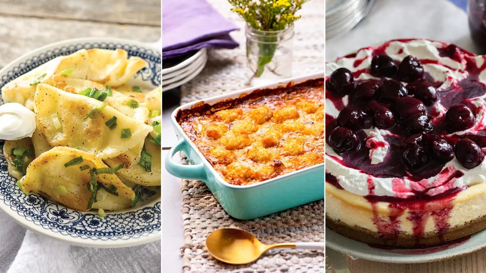

Mix-and-match recipes to welcome 2022
Fill the table with a spread so glorious in turns into a brupper
We're big fans of giving homemade food as gifts to people we love, surprising them with delicious, savoury meals or batches of baked goods to brighten their day.
It's a particularly good time for sharing the feel-good foods we've collected below — ones that feel like a real treat on a wintry day.
The recipes we've selected range from simple bakes to labours of love, with freezer-friendly dishes, savoury and sweet pies, breakfasts you can bake for an early-morning
surprise, and comforting soups and stews. They all make great Valentine's Day gifts, and we've included some cookies and chocolatey confections more traditionally
associated with the day too.
There are no rules, save for putting both savoury and sweet dishes on offer. While brunch usually includes something boozy, like
our truly magnificent Caesar recipes, consider adding a non-boozy cocktail option as well. Don't forget your vegan friends either. We've got something for everyone in this sizable list of recipes.
When it comes to brunch you can really add any of your favourite dishes to the mix, especially if they're great for sharing and grazing.